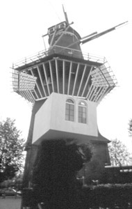

|  |
|
Toshihiro Kamatsu, Artist and His Studio, Amsterdam,
1996, Photographic documenation of wearable model of ATELIER
217, Photo dimension: 29x19", Model: Plywood, polystyrene,
plexiglass mirror, Model dimension: 15x21x27", Collection
of the artist, Photo: Tanja and Roderick Henderson.
|